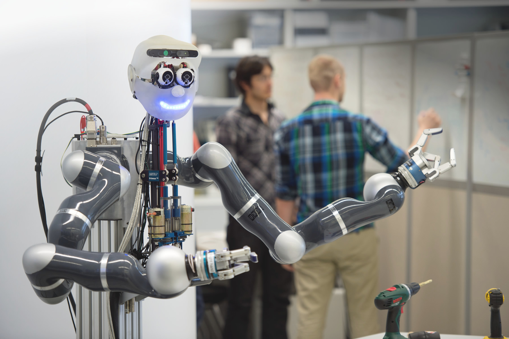
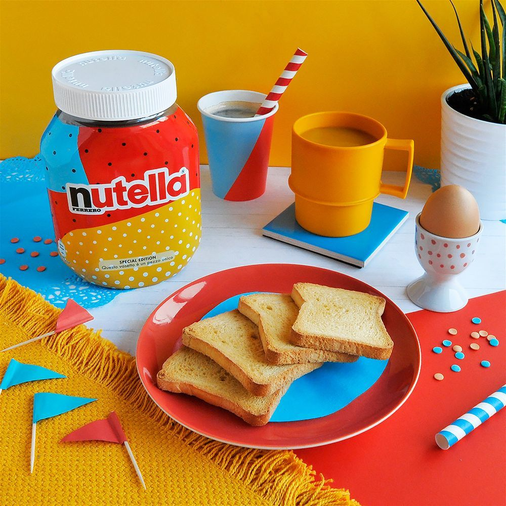

02
Wie KI die Designwelt ändert
BREMERHAVEN. In einem spannenden und lebendigen Interview berichten drei junge Bremerhavener über ihr gemeinsames Antarktis-Projekt. Dennis Vogt, Tim David Müller-Zitzke und Michael Ginzburg wollen die Öffentlichkeit auf sich aufmerksam machen und wagen daher ein einzigartiges Experiment. Sie wollen Mut zum Leben und eigenen Wertvorstellungen machen und gehen dafür einen ungewöhnlichen Weg. »Es muss nicht immer ein sogenannter »Standard-Lebenslauf“ vorhanden sein, wo es nur auf den NC und einen lückenlosen Zeitraum ankommt. Es geht auch anders!« Diese Aussage macht neugierig und ich frage nach: »Natürlich ist das Projekt Antarktis auch für die anstehende Bachelorarbeit hilfreich, es ist für uns aber nicht der Hauptanlass unserer Challenge«, meinen die Abenteurer. »Unerreichbar und über 14.000 km weit weg stellt sie uns vor eine große Herausforderung und grenzt uns von der Norm ab. Es ist ein Lebenstraum für uns, diese Landschaften auch mal mit eigenen Augen zu sehen und andere ungewöhnliche Wege zu gehen.« Durch einen Dokumentarfilm können alle drei Filmemacher ihrer besonderen Leidenschaft nachgehen und Grenzerfahrungen besonders gut darstellen. Der Polarforscher und Expeditionsleiter Michael Ginzburg kann über Erfahrungen aus der Polarforschung berichten und so entstand relativ schnell die Idee, ein Filmprojekt über die Antarktis zu drehen.
Mit dem Schiff drei Wochen über Argentinien in den Südlichen Ozean zur Antarktis.
»Natürlich ist das Projekt Antarktis auch für die anstehende Bachelorarbeit hilfreich, es ist für uns aber nicht der Hauptanlass unserer Challenge«, meinen die Abenteurer. »Unerreichbar und über 14.000 km weit weg stellt sie uns vor eine große Herausforderung und grenzt uns von der Norm ab. Es ist ein Lebenstraum für uns, diese Landschaften auch mal mit eigenen Augen zu sehen und andere ungewöhnliche Wege zu gehen.« Durch einen Dokumentarfilm können alle drei Filmemacher ihrer besonderen Leidenschaft nachgehen und Grenzerfahrungen besonders gut darstellen. Der Polarforscher und Expeditionsleiter Michael Ginzburg kann über Erfahrungen aus der Polarforschung berichten und so entstand relativ schnell die Idee, ein Filmprojekt über die Antarktis zu drehen.